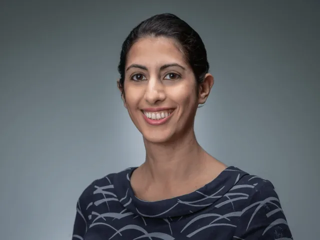
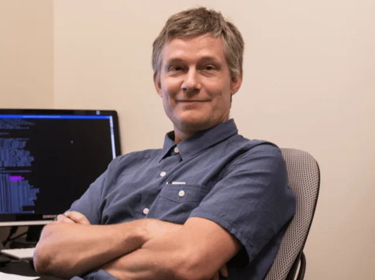

Bill Howe
Faculty Director · Co-Founder
Associate Professor in the iSchool, Adjunct Associate Professor in Computer Science & Engineering, and Founding Associate Director of the eScience Institute.
We believe in the power of collaboration — building AI systems and experiences with fairness, accountability, transparency, and ethics.
Associate Professor in the iSchool, Adjunct Associate Professor in Computer Science & Engineering, and Founding Associate Director of the eScience Institute.

Professor at the Information School, leading the Social Computing research group — building large-scale systems to understand and counter problematic information online.

Professor in the Information School and Founding Director of the InfoSeeking Lab, working on information seeking, human-computer interaction, and social media.
Paul G. Allen School of Computer Science & Engineering, working on the social impacts of machine learning.
Linguistics; computational semantics, data statements, and critical engagement with large language models.

Computing & Software Systems, UW Bothell; ubiquitous computing and applied machine learning.
Astronomy; Director of the eScience Institute and founding director of the DIRAC Institute.
Information School; AI ethics, bias in AI, and the implications of machine intelligence for privacy and equity.
Statistical models for messy, incomplete data — social networks, verbal autopsy, and uncertainty in global health.
Data mining, usable security and privacy, machine learning, and human-computer interaction.
EECS, Washington State University; founding director of the HiPDAC Lab for HPC and big-data analytics.

Information School; computational social science — social networks, ethnic groups, and housing markets.
Paul G. Allen School of Computer Science & Engineering; natural language processing.
Paul G. Allen School of Computer Science & Engineering; interactive data-intensive systems.
Information School; machine learning fairness, technology innovation, intellectual property, and entrepreneurship.
Harborview Medical Center (UW Medicine); responsible AI in healthcare, digital twins, and personality emulation.
CommLead; AI, change theory and emerging technology, and ethical digital transformation.
Graduate student in the Communication Leadership program.
PhD student at the Paul G. Allen School, associated with the InfoSeeking Lab and RAISE.
Students, researchers, and partners are welcome — say hello on Slack or drop us a note.